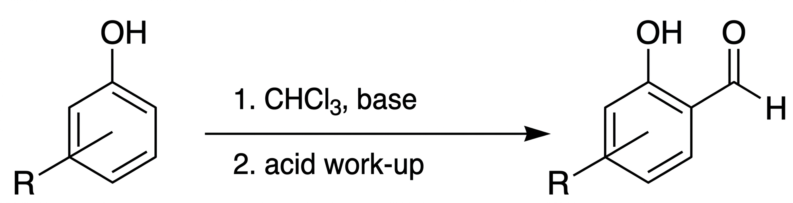
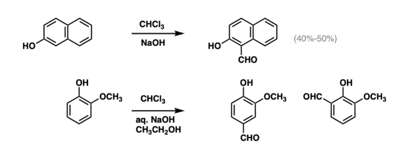
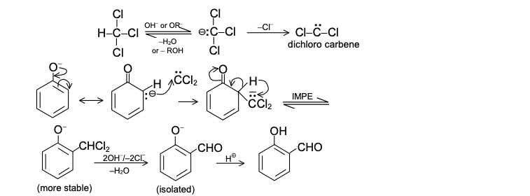

The Reimer–Tiemann reaction is an organic reaction used for the introduction of an aldehyde group
(-CHO) into phenols, mainly at the ortho position. In this reaction, phenol is treated with chloroform
(CHCl3) and aqueous sodium hydroxide (NaOH), producing salicylaldehyde as the major product.
The reaction proceeds through the formation of a highly reactive intermediate called dichlorocarbene (:CCl2),
which attacks the activated aromatic ring of phenol. The Reimer–Tiemann reaction is important for the synthesis
of aromatic aldehydes and is widely used in organic chemistry.

Phenol reacts with chloroform and sodium hydroxide to produce salicylaldehyde.

1. Chloroform reacts with strong base to generate dichlorocarbene (:CCl2).
2. Phenol forms phenoxide ion in alkaline medium.
3. Dichlorocarbene attacks the ortho position of phenoxide ion.
4. Hydrolysis converts the intermediate into salicylaldehyde.
